🐛 Issues Found
The global search bar ("Søg i boksen...") at the top of the page does not filter or search any content. Typing a search term and pressing Enter navigates to /dashboard?search=Netflix but displays all dashboard items without any filtering. The search query parameter is ignored entirely.
Impact: Users cannot find items across vault sections. For a password/information vault, search is a core feature — its absence forces users to manually browse every section to find entries.
Typed "Netflix" in global search — all items still visible
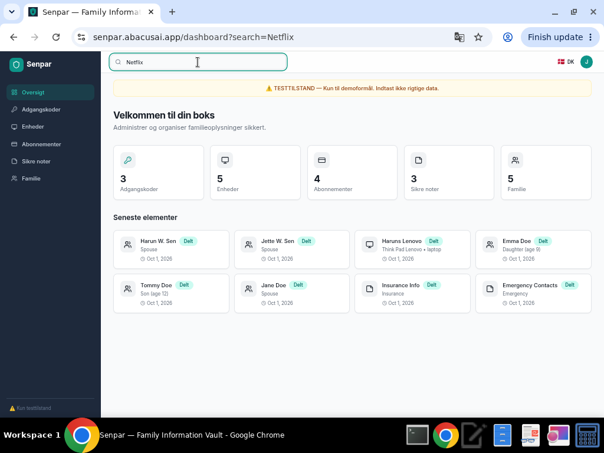
After Enter — /dashboard?search=Netflix shows all items unfiltered
When using the Tab key to navigate between form fields in create/edit modals, the tab order does not match the visual field order. This causes data to be entered in the wrong fields. For example, in the Password form, tabbing from the Password field skips the URL field and lands in Notes. In the Family form, tabbing skips the Birthday date picker, causing phone/email values to shift into wrong fields.
Impact: Keyboard-only users and accessibility tool users will consistently enter data in wrong fields. This is both a data integrity risk and an accessibility compliance failure (WCAG 2.1 — Focus Order).
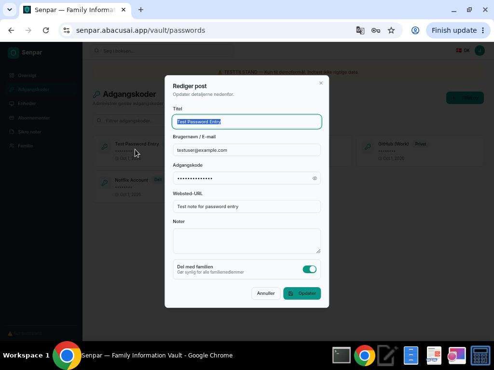
Password form: URL field contains notes text due to Tab misalignment
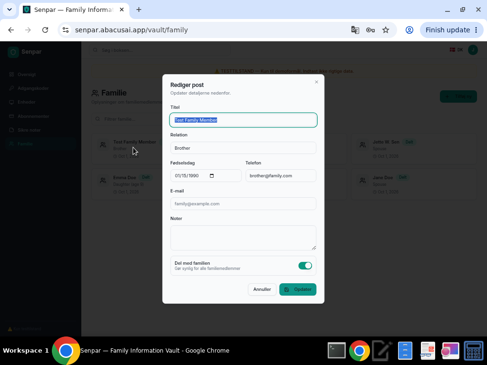
Family form: Phone field shows email value due to Tab misalignment
Navigating to a non-existent URL (e.g., /nonexistent-page) shows a plain "404 | This page could not be found." message with no Senpar branding, no sidebar, and no link to return to the application. Users are stranded.
Impact: Users who reach a 404 page (via bookmarks, shared links, or typos) have no way to navigate back to the app without using the browser back button. This is a poor user experience.
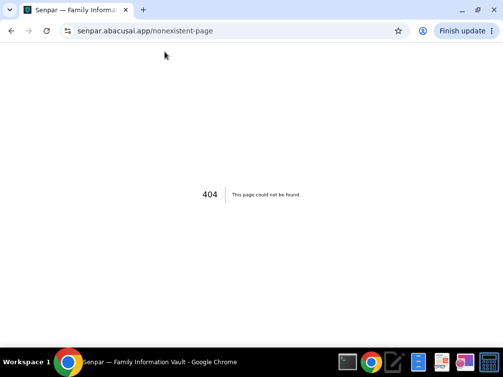
Generic Next.js 404 page — no branding or navigation
When submitting a form with an empty required field (e.g., Title), the form silently prevents submission but shows no visual error message, no red border, and no tooltip. The user receives no feedback about what needs to be corrected.
Impact: Users may be confused about why the form won't submit, especially if they accidentally cleared a required field. This is a UX friction point.
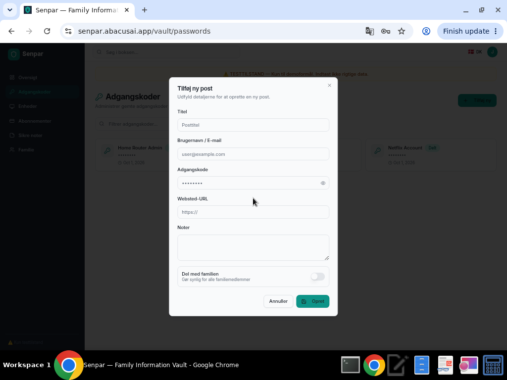
Empty title field — no visible error message after clicking Save
📋 Detailed Test Results
Login, Logout, Session Persistence, Route Protection
Tested invalid credentials (error shown), demo login (success), page refresh (session persists), direct URL access (works when authenticated), logout (redirects to login), protected route access when logged out (redirects to login), and sign-up link (navigates to /signup).
Invalid credentials — error message displayed
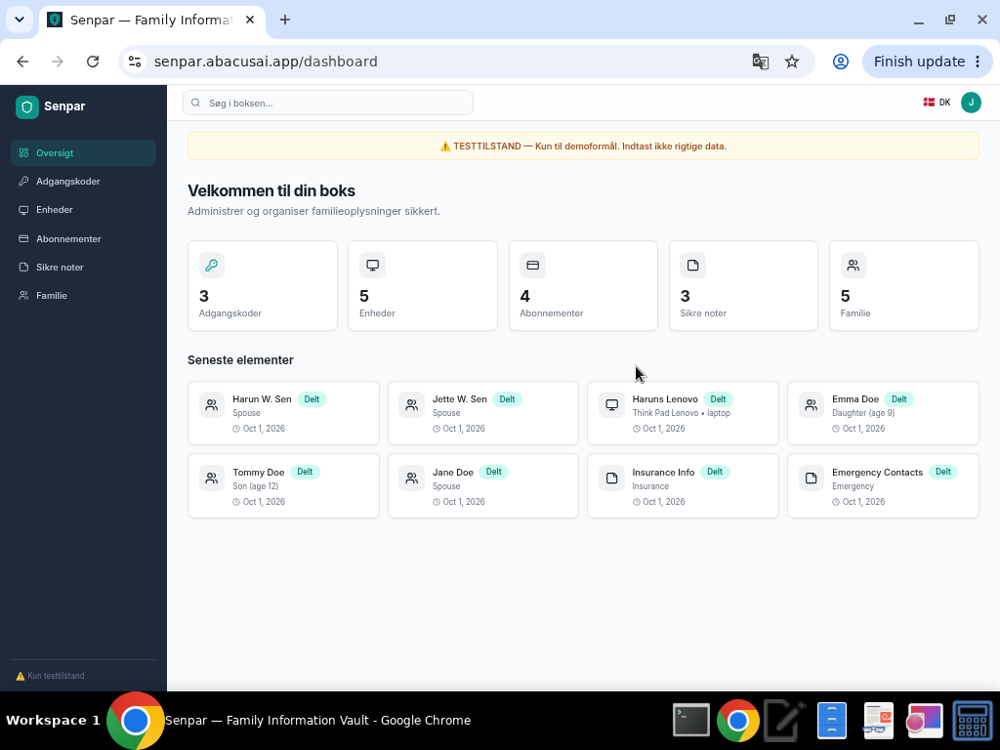
Session persists after page refresh
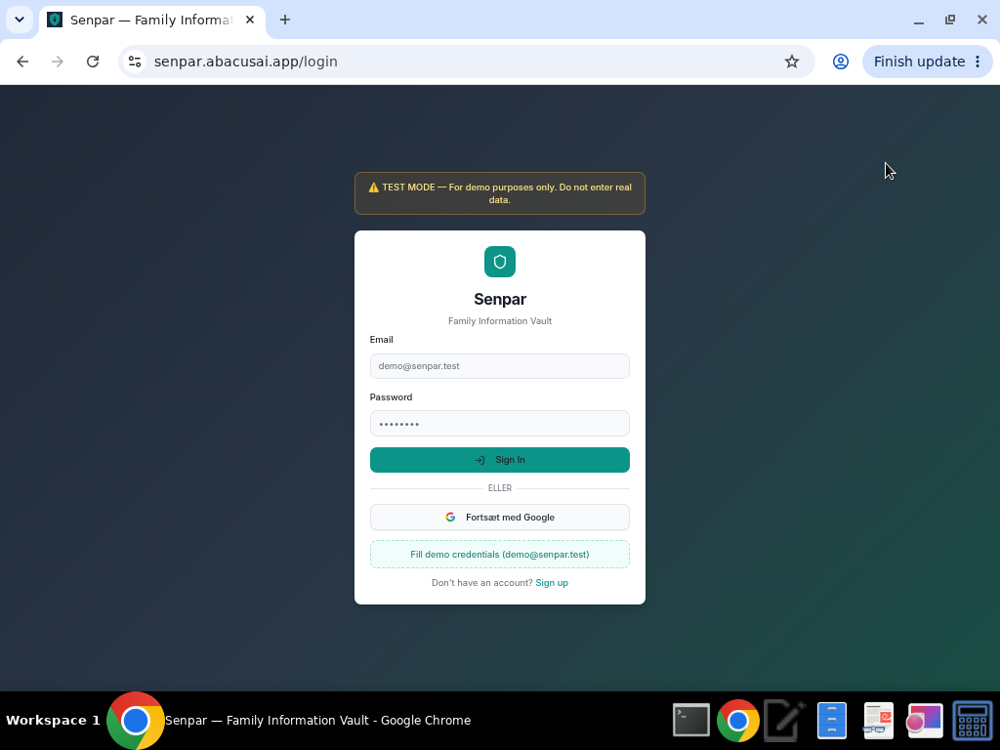
Protected route redirects to login when logged out
Summary Counts, Card Navigation
Dashboard counts (Adgangskoder: 3, Enheder: 5, Abonnementer: 4, Sikre noter: 3, Familie: 5) match actual items. Clicking summary cards navigates to correct sections. Recent element cards navigate to their respective sections.
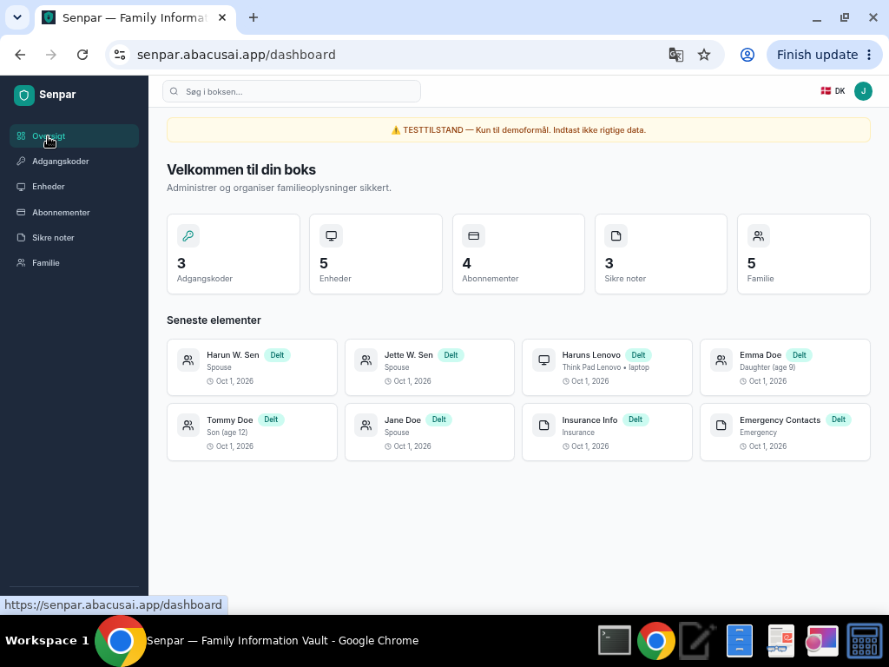
Dashboard with correct summary counts
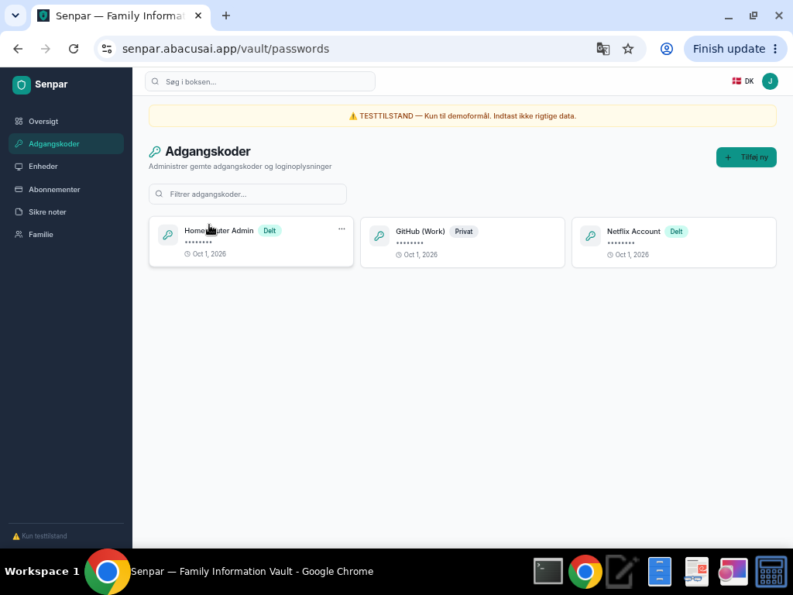
Clicking Adgangskoder card navigates to passwords (3 items)
Create, Read, Update, Delete, Filter, Password Masking
All CRUD operations work correctly when using mouse clicks to navigate fields. Create, edit, delete, and filter all function as expected. Password masking works. However, when using Tab key to navigate fields, data is entered in wrong fields (see BUG-002).
Issue: Tab navigation causes URL and Notes fields to swap values. Mouse-click field selection works correctly.
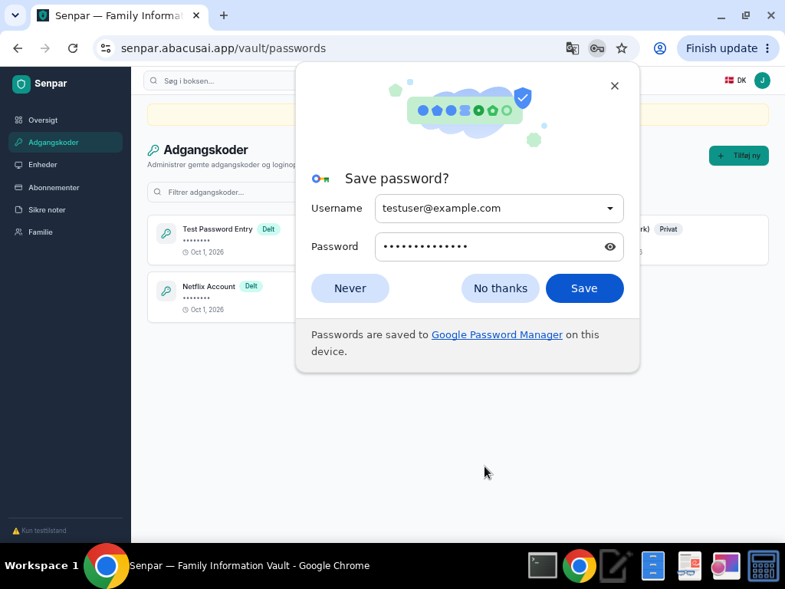
New password entry created successfully
Per-section filter correctly shows only "Netflix"
Create, Read, Update, Delete, Device Type Dropdown
Created "Test Device" as Bærbar (Laptop) with Dell XPS 15 model. Device type dropdown works with 5 options. Entry appeared with correct type label. Delete with confirmation dialog works.
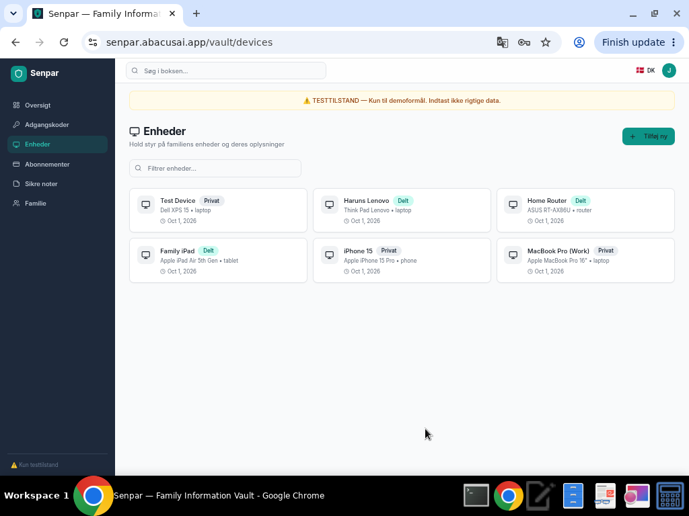
New device created with correct type categorization
Create, Read, Update, Delete, Cost Display
Created "Test Subscription" at $9.99/mo. Cost display formatting correct. Billing cycle dropdown works. Delete with confirmation works.
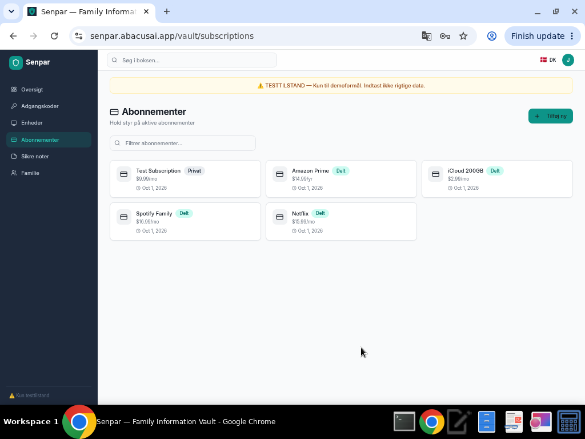
Subscription created with correct cost display ($9.99/mo)
Create, Read, Update, Delete, Content Persistence
Created "Test Secure Note" with category tag and content. Verified content persists after save by re-opening the entry. Delete with confirmation works.
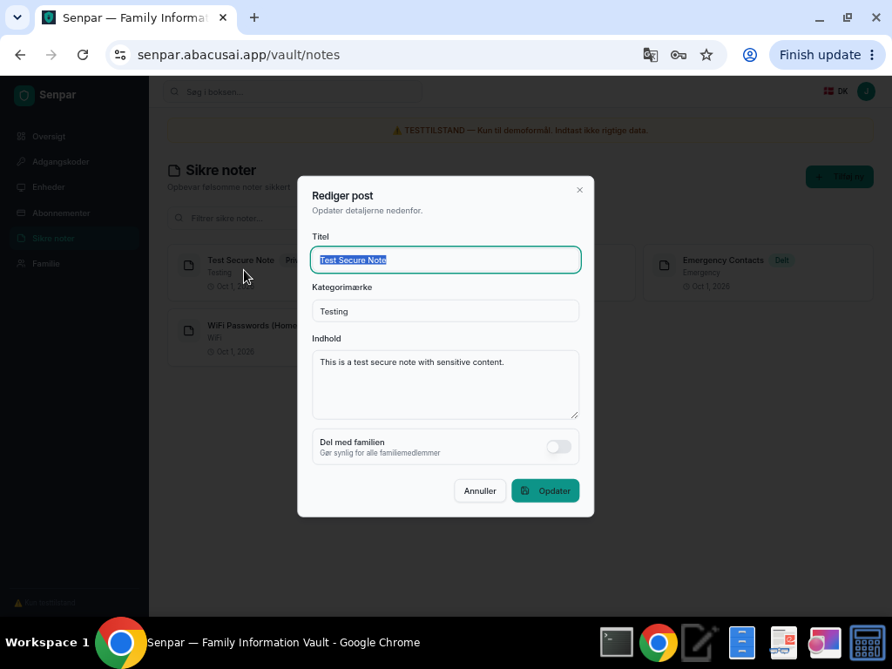
Secure note content persists correctly after save
Create, Read, Update, Delete, Sharing Toggle
Created "Test Family Member" with all fields. CRUD operations work. Same Tab navigation bug as passwords applies here (see BUG-002), but mouse-click field entry works correctly.
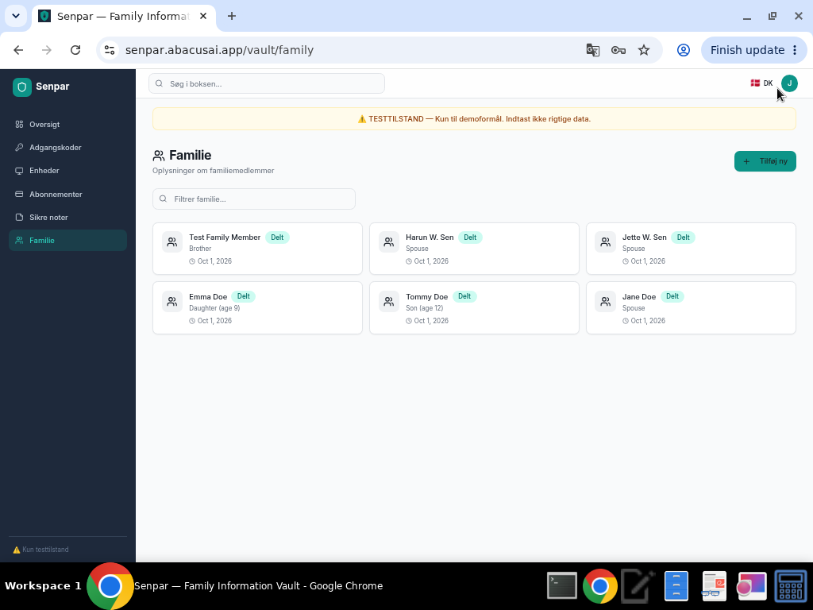
Family member created with sharing enabled
Empty Field Validation, XSS Prevention, Boundary Inputs
Empty title prevents form submission (good), but no visible error message is shown (see BUG-004). XSS payloads are properly escaped — script tags render as text, not executed. Special characters accepted in all fields.
XSS payload rendered as text — properly escaped
Global Search, Per-Section Filter
Global search bar is completely non-functional (see BUG-001). Typing and pressing Enter navigates to dashboard with search parameter but shows all items unfiltered. Per-section filter boxes work correctly.
Global search shows all items — no filtering applied
Per-section filter works correctly
Sidebar Links, Direct URL Access, Back/Forward, 404 Handling
All sidebar links navigate correctly. Direct URL access works when authenticated. Browser back/forward navigation works. Protected routes redirect to login when unauthenticated. 404 page exists but is generic (see BUG-003).
Generic 404 page — no branding or navigation back
Toggle State, Badge Update, Persistence
Toggling "Del med familien" correctly changes the badge between "Privat" and "Delt". Toggle state persists after save — re-opening the item shows the correct toggle position. Toggling back reverts the badge.
GitHub (Work) toggled from Privat to Delt
Toggled back to Privat — state persists correctly
Danish Language, Test Mode Banner, Broken Images/Links
DK flag and language indicator visible in header. Test mode banners displayed at top ("TESTTILSTAND — Kun til demoformål") and bottom ("Kun testtilstand"). All UI text in Danish. No broken images or broken links detected via DOM inspection.